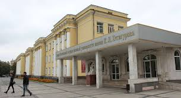

История кафедры
Кафедра математики Северо-Осетинского государственного университета имени К. Л. Хетагурова является одним из старейших и ведущих научно-образовательных центров региона. С момента своего основания кафедра обеспечивает фундаментальную подготовку высококвалифицированных специалистов, способных решать сложные теоретические и прикладные задачи.
Мы гордимся нашими традициями и преемственностью поколений. Преподаватели кафедры активно ведут исследования в области математического анализа, дифференциальных уравнений, геометрии, топологии и математического моделирования, сохраняя высокие стандарты академического университетского образования.

Преподавательский состав
Наши преподаватели — это признанные ученые, профессора и доценты, авторы профильных учебных пособий и научных публикаций в ведущих российских и зарубежных журналах.
Доктор физико-математических наук, профессор. Сфера интересов: функциональный анализ и теория операторов.
Кандидат физико-математических наук. Ведет курсы по численным методам
Куратор студенческого научного общества. Специалист по комплексной алгебре и теории чисел.
Наши достижения
Кафедра активно развивается, подтверждая свой статус одного из ключевых научных подразделений СОГУ:
- ✓ Ежегодные гранты Российского научного фонда (РНФ) на проведение передовых математических исследований.
- ✓ Регулярные победы студентов кафедры на региональных и всероссийских математических олимпиадах.
- ✓ Успешное сотрудничество с научно-исследовательскими институтами РАН и IT-компаниями региона.